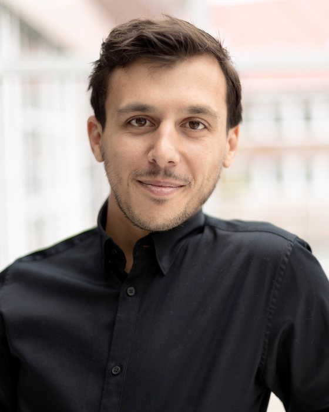
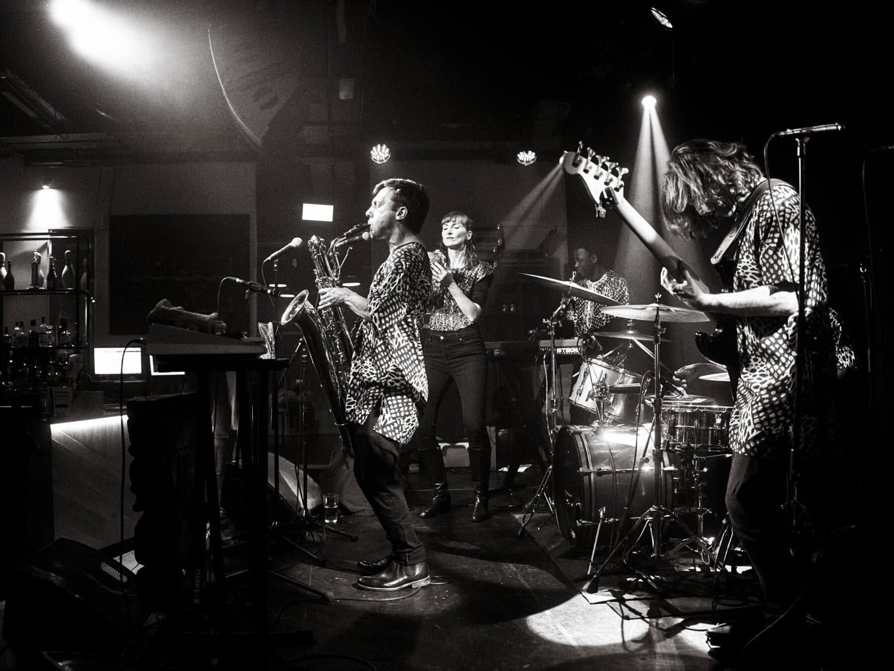
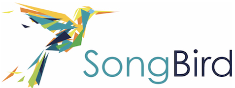
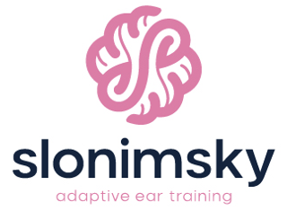

Researcher
Experiments, statistical and computational models of melodic memory, learning, playing by ear and singing, plus the open-source testing software that runs them.
I study how people perceive, remember, and learn music, and how that knowledge can be put to work, from music education to sonic branding. I build the methods, models, and tools that make music psychological theory actionable in the real world.

I am an interdisciplinary researcher, data scientist, and musician working at the intersection of musicology, psychology, and technology.
I am a Postdoctoral Researcher at the Institute of Systematic Musicology, University of Hamburg, where I investigate how musical information is perceived, remembered, learned, and transmitted. Drawing on music psychology, systematic musicology, cognitive science, and computational modelling, my research focuses on melodic cognition, musical memory, playing by ear, singing, sonic branding, and musical similarity. More broadly, I seek to understand how musical stimuli interact with human cognition to shape behaviour and experience.
Across academia and industry, I combine experimental research, statistical modelling, machine learning, software development, and cloud technologies. My work spans musical cognition, auditory memory, sonic branding, psychometrics, and longitudinal modelling, and has involved the development of large-scale testing platforms, adaptive assessment systems, and data products used by universities, research institutes, and commercial organisations.
Being a musician, a psychologist and a data scientist lets me approach complex questions from several angles, linking human behaviour, computational modelling, and practical application. I am particularly interested in developing tools and models that advance our understanding of learning, memory, and the role of music in human experience.
Experiments, statistical and computational models of melodic memory, learning, playing by ear and singing, plus the open-source testing software that runs them.
Sonic branding: modelling how audiences respond to music and sonic logos, and building the data products and testing platforms behind it.

Saxophonist working in jazz and improvisation. Playing by ear on the bandstand is where many of my research questions started.
Hover over topics for representative work.
Where the findings are put to use: in teaching and learning music, and in the music brands use to reach people.

An app for choir singers to learn their parts: listen to a melody, sing it back, and practise it again when it starts to fade.

Adaptive ear training: hear a melody, play it back by ear, and the app chooses what to practise next from a model of your learning.
How musical abilities develop, and the cognitive processes underneath them: how a melody is perceived, held in memory, learned over repeated hearings and reproduced.
The methods everything above rests on: ways to quantify how similar two melodies are, models of how learning unfolds, and tests that measure ability precisely.
For research in sonic branding: Musical manipulation of visual scenes in video, film, and TV advertisements (Journal of Advertising Research, 2024).
German Academic Exchange Service doctoral scholarship.
German Academic Scholarship Foundation doctoral scholarship.
sebastian.silas@uni-hamburg.deInstitute of Systematic Musicology
University of Hamburg
Edmund-Siemers-Allee 1, ESA 1, Room 11
20146 Hamburg